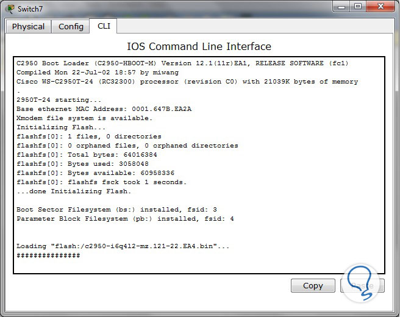
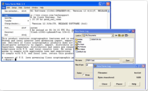

Práctica 4
En está hicimos una resolución de problemas de configuración de una red inalámbrica. La cuál consiste en ocupar 3 switch (2960), un router (1941), 5 terminales y 2 router inalambricos. Nos enfocamos más en los switch ya que está práctica consiste en tener VLAN por cada subred, configuramos los switch y en los router trabajamos con encapsulación para que toda la red se comunique.

Comandos del router
Algunos comandos del router los básicos e importantes son:
| Comandos | Para que sirven |
|
end y exit enable ^z config t no hostname login motd caracteres no banner motd |
Se utiliza para salir del modo exec privilegiado Se utiliza para entrar al modo exec privilegiado Se puede utilizar para salir del modo de configuración global y regresar al modo exec privilegiado Se puede emplear para ingresar al modo de configuración global Sirve para eliminar el nombre que le hayamos puesto Establece un mensaje de inicio de sesión Establecer banner de mensaje del día Se utilizan para abrir y cerrar el mensaje del banner Quita el mensaje que hemos puesto anteriormente |
Modelo OSI
(Open Systems Interconnection) es un marco conceptual que estandariza las funciones de un sistema de telecomunicaciones. Fue desarrollado por la organización internacional de normalización. Depende de la capa inferior para realizar sus funciones y proporciona servicios a la capa superior

Configuración de interfaces
Las interfaces nos sirven para cualquier práctica, ya que aunque solo sea un switch (2960) y 2 terminales se necesitan las configuraciones de estás ya que sin ellas no pueden tener comunicación, ahora si bien se realiza alguna VLAN, se necesita las interfaces para que tengan comunicación todas las VLANs

Verificación de configuración
Para verificar la configuración de la interfaz, tenemos que utlizar los comandos "show ip interface brief y show ipv6 interface brief"estos nos indican cuales interfaces tenemos con dirección IP, con su mascara de red y apagados.
Administración de archivos de configuración IOS
Es fundamental para garantizar la configuración adecuada y la recuperación en caso de problemas. es esencial para mantener la estabilidad y la seguridad de la red. Con el uso adecuado de comandos y procedimientos, puedes asegurar que la configuración esté respaldada y sea accesible cuando sea necesario.
Rutas estáticas
Se configuran de forma manual. Estás definen una ruta explícita entre dos dispositivos de red. A
diferencia de los protocolos de routing dinámico, las rutas estáticas no se actualizan automáticamente y
se deben reconfigurar de forma manual si se modifica la topología de la red.
Los beneficios de
utilizar rutas estáticas incluyen la mejora de la seguridad y la eficaacia de los recursos.